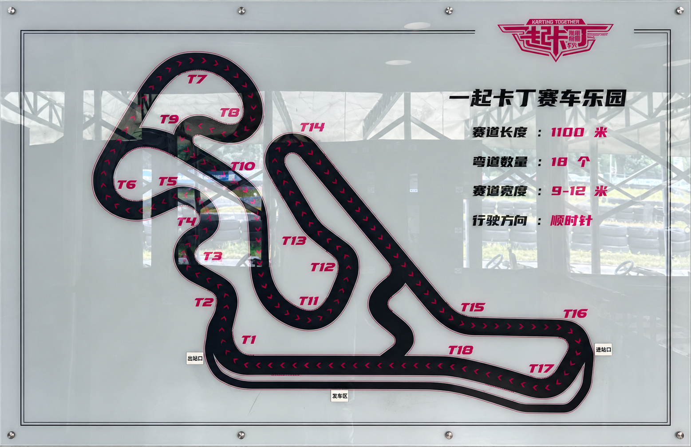

可重复的速度
17:19这一节的三个最快圈仅差0.326秒。它提供了比孤立PB更可靠的比较基础。
广州速搏 · 2026年10月6日 · Aprilia GPR150
自己驾驶，也承担数据采集与节间分析。用连续弯的时间收益和人的重复响应，理解一整天的适应过程。
上午至全天最好圈改善1.377秒。
下午至晚间14圈低于61.6秒，速度开始可以重复。
全天PB只回答整圈。要解释它，必须继续看时间在哪一组弯取得，又在哪一组弯被抵消。
17:19这一节的三个最快圈仅差0.326秒。它提供了比孤立PB更可靠的比较基础。
前Rosso IV、后Supercorsa V3 SP；暖胎包与1.70 / 1.60 bar热态工作基线。当天压力读数反复稳定。
最后一节有被MiniGP追赶、疲劳与主动让车。慢圈按事件理解，避免直接当作驾驶退步。
首节未录制。速搏缺少OBD；速度与倾角为GPS及其计算通道。稳定胎压是可复用条件，最优压力与抓地因果尚未确认。
把T7–T8和T9当作一个完整任务。固定入口与出口，追踪同一节内两圈穿过共同地理门的累计时间差。
第四节L6相对L3：T7峰值低3.109 km/h，却在T7–T9整组快0.754秒。减少等待可以有效，完成方式决定收益能否保留。
时间差来自共同地理门；曲线为已有空间对齐。正值表示比较圈更慢。GPS净减速不能确定识别具体制动输入。
逐圈平均掩盖了一个重复现象：T13末段到T14附近，心率反复下降。把人的通道按赛道位置叠加，才能看见它。
原始心率局部窗口下降，中位约1.7 bpm。五节均出现；去线性趋势后34圈下降。
合并曲线的谷在参考进度约560米。它是重复信号，暂不直接解释为放松或紧张。
T13长左弯较顺畅，心率谷随后出现在T14。谷比回到直立晚约3秒，但未确认固定延迟关系。
细线为单圈，彩色粗线为各节平均，黑线为五节等权平均。35圈排除出站、未闭合尾段及最后让车候选。参考轴约883米，不是场地标称长度。全圈扫描为探索性发现。
心率位置结构由驾驶员追问后才被分析。这次遗漏变成了可复用流程的固定项目，而不是只留下一个结果。
| 车队任务 | 已有工作证据 / Evidence from the work |
|---|---|
| 定位连续弯损失 | 用共同地理门追踪时间差；分离T8赚到的0.181秒与T9及下游丢掉的0.762秒。 |
| 评价出口收益 | 第五节L9的尾部优势追到主直道末端仍保留0.150秒。快恢复与实际更快分别评价。 |
| 结合人和车辆数据 | 按时间、位置与圈序分析心率；保留固定谷、疲劳和被追情境，避免用平均心率给驾驶打分。 |
| 把复盘转成测试 | 保留原话、假设、执行身份、反例与状态；以整组和下游收益定义验收，减少同时主动任务。 |
| 纠正不可靠归因 | 撤回受跨节共同位置偏移影响的T9“慢0.6秒”判断；同节比较与地图展示分别处理。 |
这些是已完成的个人驾驶与分析工作。AI协作参与整理、计算、图表和复盘；驾驶员提出问题、执行、报告与纠正。心率谷的身体或传感器机制仍待独立验证。
作品集呈现已完成的分析。原始记录、探索过程与旧结论保留在本地档案；下面是可继续复用的结果。
T7–T9好跑法的重复执行、实际边界标定、精确油门与制动输入，以及心率谷的机制和跨日复现。
